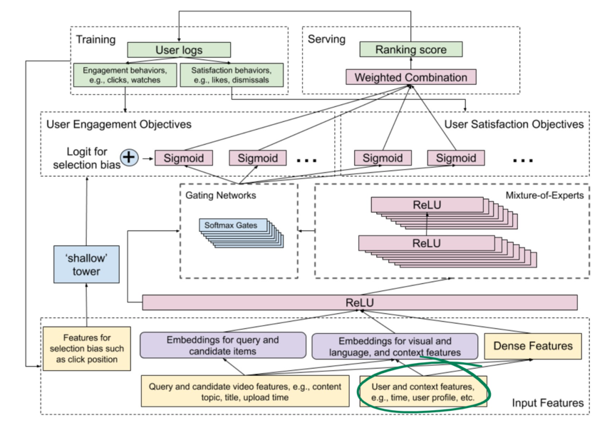
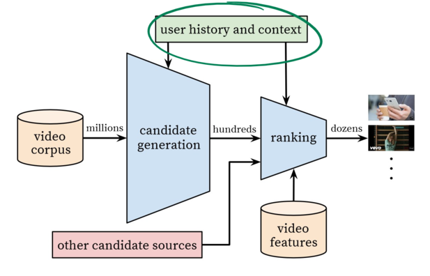

A critique of “Algorithmic Extremism”
Sancho McCann
This post is a critique and recontextualization of a recent pre-print paper by Mark Ledwich and Anna Zaitsev, “Algorithmic Extremism: Examining YouTube’s Rabbit Hold of Radicalization.”
First, an alternative abstract:
The role that YouTube and its behind-the-scenes recommendation algorithm plays in encouraging online radicalization has been suggested by both journalists and academics alike. This study quantifies the extent to which this is true for users who are new to the platform and who do not have a viewing history. After categorizing nearly 800 political channels, we were able to differentiate between political schemas in order to analyze the algorithm traffic flows out and between each group. We analyzed the recommendations that an anonymous user was provided when visiting each channel type. We observed that YouTube’s recommendation algorithm actively discourages new and anonymous viewers from visiting radicalizing or extremist content. Instead, in this initial exploratory phase, the recommendation algorithm favors mainstream media and cable news content over independent YouTube channels. Our study thus suggests that YouTube’s recommendation algorithm does not promote inflammatory or radicalized content to users who are new to the platform.
That is how I would have framed this paper.
Insights into the black box of any proprietary recommendation algorithm are hard to come by. Ledwich and Zaitsev provide a valuable contribution. While YouTube has publicized the technical details of their recommendation algorithms, they publish scant data on the nature of the resulting recommendations.
My critique of this paper is that Ledwich and Zaitsev don’t adequately confine their conclusions to the experience of a new user. They use language that implies that their observations likely generalize to the recommendation algorithm as a whole:
- “YouTube’s recommendation algorithm fails to promote inflammatory or radicalized content”
- “YouTube’s recommendation algorithm actively discourages viewers from visiting radicalizing or extremist content”
- “The data shows that YouTube does the exact opposite of the radicalization claims”
They include only one paragraph that expresses a very limited doubt about whether their observations would generalize to logged-in users (emphasis mine):
One should note that the recommendations list provided to a user who has an account and who is logged into YouTube might differ from the list presented to this anonymous account. However, we do not believe that there is a drastic difference in the behavior of the algorithm. Our confidence in the similarity is due to the description of the algorithm provided by the developers of the YouTube algorithm [38]. It would seem counter-intuitive for YouTube to apply vastly different criteria for anonymous users and users who are logged into their accounts, especially considering how complex creating such a recommendation algorithm is in the first place.
That paragraph extremely understates the role that personalization plays in YouTube’s recommendation algorithm. I recognize that Ledwich and Zaitsev haven’t collected the data needed to confirm themselves that personalized recommendations are different than anonymous recommendation, so perhaps they are just being careful. But the whole point of a recommendation algorithm is to tailor the recommendations to the individual. And further, the very description of the algorithm provided by YouTube (Recommending What Video to Watch Next) explicitly mentions personalized recommendations that take into account a user’s watch history, demographics, time, and location.

It’s also probably not correct to refer to “the YouTube algorithm” as having been described in an individual paper. YouTube is constantly running experiments. Some improvements are published. Some but not all of those end up in the production algorithm.
So, let’s look at another paper from YouTube: Deep Neural Networks for YouTube Recommendations. This paper also acknowledges that a user’s activity history is relevant for recommendations.

So again, Ledwich and Zaitsev have made some interesting and important observations about the behaviour of YouTube’s algorithm during its initial, exploratory, un-personalized phase for a new user. But these observations should not be taken to demonstrate anything about the behaviour of the algorithm (or the behaviour of the algorithm mixed with user responses to that algorithm) as it learns more and more about you.